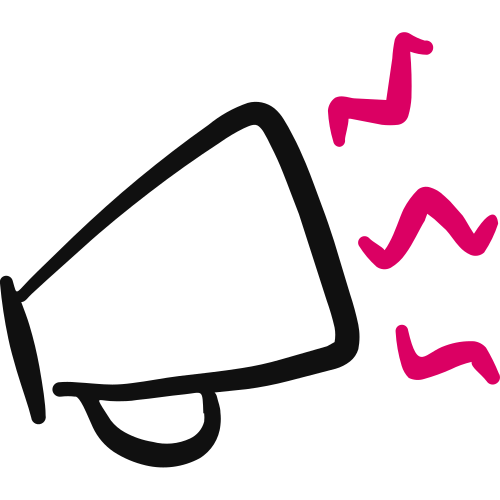

Foundations · 3 of 5 · Before the Engine
The Brand Voice
How your brand sounds in words, written down so every email, post and page sounds like the same real person. You build it with AI, one question at a time.

You'll leave with your Brand Voice: your voice attributes, tone range, signature style, power and banned words, grammar rules, do-this-not-that pairs and one gold-standard sample, all speaking as one pronoun and ready to paste into any AI writing tool.
- A voice you can't copy is a voice you can't keep. Three nice adjectives won't help you write a single email. 01
- It's built in seven layers. From how you sound, down to a sample paragraph anyone can copy. 04
- One pronoun, all the way through. "I" for a solo business, "we" for partners or a team, taken from your Profile. 03
- The Builder does it with you. Paste the prompt into a new chat and answer one question at a time. 08
- No score, a Ready Check. Every check a clear yes, and a stranger or an AI could write in your voice from it. 07
01
How Your Brand Sounds
Your Brand Voice is how your brand sounds in words, written down so everything you publish sounds like the same person.
It's your tone, your rhythm, the words you reach for, and the words you'd never use. It's the difference between copy that sounds like you and copy that sounds like a committee.
It matters because people buy from brands that sound like a real person.
Your voice is how a stranger decides if they like you before they ever talk to you. A clear, steady voice gets your emails opened, your posts read and your sales pages felt.
A blurry voice, "professional yet approachable" like everyone else, sounds like no one. And no one leans in to no one.
One voice, everywhere. Once it's written down, you can paste it into any AI writing tool and get copy that sounds like you, not like a robot borrowed your logo.
Your voice isn't random. It comes from who you are.
That's why it's built from the personality and values in your Business Brand Profile. Your voice is those things, turned into words.
What it is not
It's not a list of three adjectives. That's the start, not the guide. The guide is everything concrete underneath them.
It's not one piece of copy. It's the rules every piece of copy follows.
It's not Matthew's voice, or any guru's voice, borrowed onto your brand. It's yours, pulled from how you actually talk.
And it's not your Visual Style Guide. That's how you look. This is how you sound. Together they make one brand people recognise.
A voice you can't copy is a voice you can't keep. Real word lists, real rules, real examples and a sample anyone can copy.
02
Where It Fits
The Brand Voice is Foundation 3 of 5. You build it after your Business Brand Profile and your Visual Style Guide, and before Products & Pricing and Competitive Landscape.
The five Foundations come before Step 1 of The $100K Day Engine™. They're the ground the whole Engine stands on, and every builder after them reads them.
| Foundation | Document | What it gives you |
|---|---|---|
| 1 | Business Brand Profile | What you believe, why you exist, where you're going |
| 2 | Visual Style Guide | How your brand looks: your Brand Kit |
| 3 · You are here | Brand Voice | How your brand sounds: words, tone, rhythm |
| 4 | Products & Pricing | What you sell, what it costs, how you deliver it |
| 5 | Competitive Landscape | Who else serves your people, and the lane you hold |
It comes after the Profile because it draws on three things from it: your personality, your values, and whether the business is just you or a team.
Then the Engine starts. Its three pillars and nine steps all sit on top of these five documents.
Figure 02 · The $100K Day Engine™. Three pillars, nine steps. The five Foundations come before Step 1.
Downstream, your voice touches every word you'll ever publish.
Your $Million Promise™, your $Million Moment™, your SCORE™ Card, your emails, posts, ads and sales pages all get written in it. The Engine's copy tools work best when you feed them this guide.
All five Foundations live in the Reference folder of your $100K Day AI Workspace. This one saves as brand-voice.md.
With no written voice, every piece of copy is a fresh guess, and guesses wander. One email is stiff and corporate, the next is loose and jokey.
Your audience never gets a steady read on you, so trust builds slowly, if at all. And any AI you use defaults to bland, because you never told it how you sound.
03
How You'll Build It
You build a voice in seven layers, from the general feel down to specifics you can copy and paste.
The layers are your voice attributes, your tone rangeHow your voice flexes from moment to moment: selling, teaching, supporting, celebrating. Same voice, different energy., your signature style, your words to use and avoid, your grammar and formatting, your do this, not that examples, and your gold-standard sampleOne short paragraph written fully in your voice. The master copy a writer or an AI copies from..
It works best if you paste in something you've actually written. Then the Builder can hear your real voice instead of inventing one.
Figure 03 · The shape of a Brand Voice. Seven layers, one guide anyone (or any AI) can write from.
Your Profile decides "I" or "we"
Your Business Brand Profile records who runs the business: just you, partners, or a team. The Builder reads that line and sets the pronoun for everything.
A solo coach's voice says "I." A partnership's or a team's says "we."
It sounds small. It isn't. Two founders whose every email says "I" reads as one person hiding the other. A solo coach who says "we" sounds like a committee.
If your Profile recorded two founders with different personalities, the Builder reads that too. It tells it whether to build one voice or two named ones.
"I don't know yet" is a real answer
Some of this you'll answer instantly. Some you can't know until you've published, like how you sound when you sell if you've never sold.
Say so. The Builder writes it down as UNVERIFIEDA marker for something you can't know yet, with a note on what will settle it. A marked unknown still passes the Ready Check., with a note on what will settle it, and moves on.
A guessed voice is worse than a gap, because every piece of copy after it copies the guess.
04
The Seven Layers, In Full
Here's each layer: what it is, why it matters, how to find yours, and the trap that keeps voices generic.
Voice AttributesHow you sound
The 3–5 words that describe how your brand sounds, each with a line on what it means and what it doesn't.
Why it matters. These anchor everything else, but only if they're specific. "Professional, approachable, trustworthy" describes a printer, not a person.
How to find yours
Push past the safe words to the true ones: blunt, warm, fiery, nerdy, calm, funny. Make sure at least one has an edge. A voice that's all warm has no spine.
Then pin each one down: "Direct means I say the hard thing kindly. It does NOT mean I'm harsh." That second line stops the voice turning into a cartoon of itself.
"Professional, approachable, trustworthy." Every brand claims them. None of them is a voice.
"Blunt, warm, a little funny." You can hear it. And "blunt means honest, not mean" keeps it in check.
The trap: reaching for the respectable words because the true ones feel risky. The risky ones are exactly what make people feel something.
Tone RangeHow it flexes
Your voice stays the same. Your tone shifts with the moment. Tone range names how you sound when you sell, teach, support and celebrate.
Why it matters. One tone for every moment reads as flat, or wrong. A comforting message shouldn't sound like a hard sell.
How to find yours
For each moment, name a couple of words. Selling might be confident and urgent. Teaching, patient and plain. Supporting, warm and reassuring. Celebrating, high-energy.
Check each one still fits your core voice. A blunt brand sells hard without turning into a con.
The exact same tone whether you're closing a sale or comforting someone who's stuck. It'll land wrong somewhere.
Selling: confident, direct. Supporting: gentle, steady. Same voice, different energy for the room.
The trap: a selling tone that breaks character, suddenly pushy on an otherwise warm brand. Flex the energy, not the identity.
Signature StyleYour fingerprints
The habits that make a line unmistakably yours: sentence length, contractions, how you start sentences, one-line paragraphs, humour, and any phrase you always use.
Why it matters. These are what people recognise even when they can't say why. They're the difference between "sounds like a brand" and "sounds like you."
How to find yours
Decide your rhythm: short and punchy, flowing and warm, or a mix. Contractions or not. Start sentences with "And" or "But," or don't.
Then hunt for your signature phrase, the thing your clients would say is "so you." Keep it. That's gold, not something to polish out.
No habits named, so every writer (and every AI) guesses, and the copy never sounds the same twice.
"Short sentences. Contractions. One-line paragraphs. And I always say 'here's the thing.'"
The trap: habits that fight your attributes. "Punchy" on paper, but long, winding sentences in practice. Make the habits match the voice.
Words You Use and AvoidThe vocabulary
Two real lists: the power words you reach for, and the banned words that are never you.
Why it matters. Word choice carries voice faster than almost anything. Swap a few cringe words for your real ones and copy instantly sounds more like you.
How to find yours
Write 8–15 power words: the verbs, feelings and audience language you actually use.
Then write your banned list: the jargon and clichés that make you cringe. Actual words, not categories like "positive language."
"Use positive, uplifting words and avoid negative ones." No actual words, so nobody can apply it.
Use: "build, land, real, stuck, worth it, here's the thing." Avoid: "leverage, unlock, synergy, elevate."
The trap: listing categories instead of words. "Encouraging language" isn't usable. Give the actual words you'd type.
Grammar and FormattingThe mechanics
The mechanical rules: reading level, paragraph length, punctuation, capital letters, emoji policy, and how you write numbers.
Why it matters. Mechanics keep every piece consistent. They're essential when an AI writes for you, because it needs the rules spelled out.
How to find yours
Set your reading level. Plain and simple usually wins online. Decide paragraph length. Short, with white space, reads easiest.
Make the punctuation calls: dashes, exclamation points, all-caps for emphasis. Pick Title Case or sentence case for headings. Set an emoji policy. Then check it all lines up with your voice.
Rules that fight the voice: "casual and punchy," but formal grammar and long blocks of text.
"5th-grade level. Short paragraphs. Dashes yes, exclamation points rarely. No emojis."
The trap: skipping this because it's dull. It's the layer that makes AI-written copy actually match you. Don't leave it blank.
Do This, Not ThatThe proof
Three or four before-and-after pairs: the same idea written off-voice, then in your voice.
Why it matters. Examples make a voice something you can see, not just describe. One good before-and-after teaches more than a page of adjectives.
How to find yours
Take normal marketing lines, like an offer, a tip or a welcome, and rewrite each with your attributes, power words and rules.
Keep only the pairs you'd swear are yours. If the "after" doesn't sound like you, it's not done.
"We are excited to offer a comprehensive solution to help you optimize your results."
"Here's the thing. You don't need more tactics. You need one that actually works. That's what this is."
The trap: locking a polished "after" that isn't how you'd really say it. Real beats impressive.
Gold-Standard SampleThe reference
One short paragraph written fully in your voice. The master copy a writer or an AI copies from.
Why it matters. This is the single most useful thing in the guide. Paste it into any tool, say "write like this," and you get your voice back.
How to find yours
Pick something you'd write often, like a welcome, an offer intro or a pep talk, and draft it using every layer above.
Then tweak it until you'd happily send it. When you read it and think "yeah, that's me," it's done.
The trap: settling for "close enough." This is the one people copy forever. Get it all the way to unmistakably you.
05
Before and After
Here's a no-nonsense business coach turning "how she talks" into a voice she can repeat.
Voice: "professional, approachable, trustworthy."
So her copy comes out like this: "We are excited to offer a comprehensive solution to help you optimize your results."
- Attributes: blunt (honest, not mean), warm (I'm on your side), funny (dry, never goofy)
- Style: short sentences, contractions, one-line paragraphs, starts with "Look" or "Here's the thing"
- Power words: build, real, stuck, worth it, do the work
- Banned: leverage, unlock, synergy, hustle
"Look. You're not stuck because you're lazy. You're stuck because nobody showed you the order to do things in. Let's fix that. It's simpler than you think, and it's worth it."
Figure 05 · Same coach, same business. An illustrative example: it shows how specific to get, not a voice to copy.
Now every email she writes, or any AI writes for her, sounds exactly like that. Consistent, and unmistakably her.
06
The Hard Rules
These keep your voice distinct, consistent and actually usable. The Builder holds you to every one.
- True over safe. Real attributes with flavour, never "professional, approachable, trustworthy." At least one with an edge.
- Concrete over abstract. Actual words, actual rules, actual examples. Not categories and vibes.
- Yours, not borrowed. Built from how you actually talk, never a guru's voice stapled on.
- Tone flexes, identity doesn't. Sound different when you sell and when you support, but always sound like you.
- One pronoun. "I" for a solo business, "we" for partners or a team, taken from your Profile and held in every example. Never both.
- Keep your signature phrase. The thing you always say is gold. Protect it, don't polish it out.
- Set the mechanics. Reading level, paragraph length, punctuation and emojis, spelled out, especially for AI.
- Show, don't just tell. At least three before-and-after pairs you recognise as yours.
- The copy test. A stranger or an AI could write in your voice from this guide. If not, get more concrete.
07
How It's Checked
This Foundation isn't scored out of 25. A voice is judged by whether it's distinct, consistent, concrete and truly yours.
So it passes a Ready Check instead. The Builder runs seven checks, and every one must be a clear yes.
| Check | It passes when… |
|---|---|
| Voice attributes | 3–5 specific, true words, each with a "means / doesn't mean" line, and at least one with an edge |
| Tone range | Selling, teaching, supporting and celebrating actually differ, and all still fit the voice |
| Signature style | Real habits are named, including any signature phrase |
| Words you use and avoid | A real power-words list (8–15) and a real banned list: actual words, not categories |
| Grammar and formatting | Reading level, paragraph length, punctuation, capital letters and emoji policy are set |
| Do this, not that | At least three before-and-after pairs you confirmed sound like you |
| Gold-standard sample | One paragraph you agree is unmistakably your voice |
On top of those seven, the Builder checks three more things.
Every example and the sample use one pronoun. A voice that flips between "I" and "we" fails. Bland default attributes with nothing under them fail. And anything marked UNVERIFIED, with a note on what will settle it, passes.
Hand this guide to a stranger or an AI. If they could write a post that sounds like you, it's ready.
08
Build Your Brand Voice
Now you build it. Have your Business Brand Profile and something you've written close by.
The Brand Voice Builder
It reads your Profile and your writing, walks you through all seven layers, runs the Ready Check and hands you one Brand Voice guide. It asks one question at a time and waits for your answer.
Paste the whole prompt as it is. The length is instructions for the AI, not work for you.
- Copy the prompt. Use the button above, or download the file.
- Open a new chat. In Claude, start it inside your $100K Day AI Workspace project so it can read your Foundations. ChatGPT works too.
- Paste it and send. The Builder says hello and asks you to paste 3–4 sentences you've actually written, or your personality and values. It also asks for your Business Brand Profile. Check: it asks one question, then waits.
- Answer one question at a time. Seven layers: Voice Attributes, Tone Range, Signature Style, Words You Use / Avoid, Grammar & Formatting, Do This / Not That, Gold-Standard Sample. Say "I don't know yet" when it's true.
- Check the guide. It runs the Ready Check before it hands it over. Check: the "Speaks as" line says "I" or "we," matching who runs your business.
- Save it. In your AI Workspace it goes in Reference, as
brand-voice.md.
09
Check Your Work
Almost every generic-sounding brand falls into one of these seven. Check your voice against each one.
Safe words that describe every brand, so yours sounds like all the others.
True words, with at least one that has an edge.
Three nice words, no lists, no rules, no examples. You can't write from adjectives.
Power words, rules, before-and-afters and a sample.
A big creator's style copied because it works for them. It doesn't fit, so you can't keep it up.
Start from a sample of how you already sound.
The same energy whether you're selling or consoling. A hard sell on a support message pushes people away.
How it flexes across selling, teaching, supporting and celebrating.
No rules on paragraphs, punctuation or emojis, so AI-written copy drifts.
It's what makes your tools match you exactly.
Rules, but no example paragraph. The sample is the most-used part, so people still guess.
Short, unmistakable, and the reference for everything.
Or "we" from a solo coach, to sound bigger. Either way it reads as slightly untrue.
Held in every layer, including the gold-standard sample.
Is it ready?
- You have 3–5 specific, true voice attributes, each with a "means / doesn't mean" line.
- At least one attribute has an edge.
- Your tone flexes across selling, teaching, supporting and celebrating, and still fits your voice.
- Your signature style names real habits, including any signature phrase.
- You have a real power-words list (8–15) and a real banned list.
- Your grammar and formatting rules are set.
- You have at least three before-and-after pairs you recognise as yours.
- You have one gold-standard sample that's unmistakably you.
- Every example and the sample use one pronoun, matching who your Profile says runs the business.
- Anything you couldn't know yet is marked UNVERIFIED with a note, not guessed.
- A stranger or an AI could write in your voice from this guide.
10
Your Action Items
Tick these off as you go. Your ticks stay in this browser, and when they're all done the contents marks this chapter complete.
Resources for this chapter
That's three of your five Foundations: who you are, how you look and how you sound. Next, in Products & Pricing, you lay out what you sell and what it costs.
People don't fall for brands. They fall for voices that sound like a real person. Say it the way only you would say it, and say it that way every single time.
Coach Launch Academy™
Ready to Build Your $100K Day Masterclass
The ultimate one-to-many client acquisition system
Use the Brand Voice Builder tool in Coach Launch Academy™ to build yours with AI-guided tools and premium one-on-one consulting & coaching.
Last updated 2026-11-12